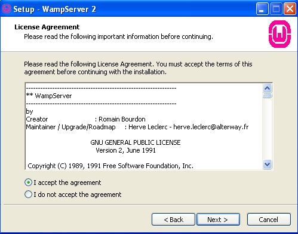
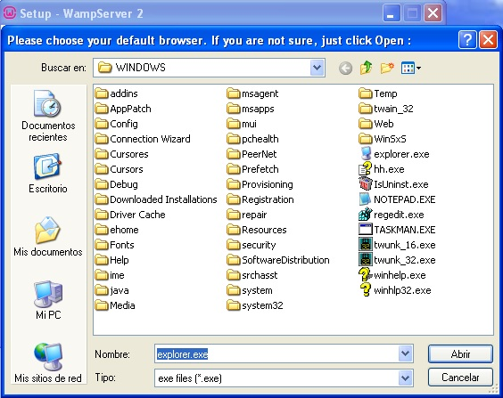
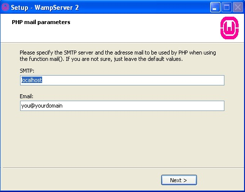
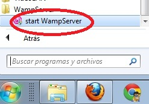

Este software contiene todo lo que necesitamos para probar en forma local en nuestro equipo los programas que codifiquemos en PHP.
Procedemos a descargar el WampServer de la siguiente página: aquí.
Luego de descargarlo procedemos a ejecutar el instalador:

Aceptamos los términos y condiciones:
Elegimos el directorio donde se instalará":

Indicamos si queremos que se cree un ícono en el escritorio:

Procedemos a presionar el botón "Install":

Luego de instalarse nos solicita que navegador abrirá por defecto cuando ejecutemos el PhpMyAdmin (para la creación de la base de datos de MySQL):
En el siguiente diálogo dejamos los datos por defecto:
Finalmente aparece el diálogo final donde se nos informa que se iniciará el WampServer (es decir que se cargará en memoria el Apache, el PHP y el servidor de base de datos MySQL) :

Ahora podemos ver el iconos del WampServer en la bandeja del sistema de Windows (si se encuentra en color verde significa que está ejecutándose correctamente):

Cuando trabajemos otro día recordemos de iniciar el programa WampServer y ver que aparece en la bandeja del sistema (para esto desde el menú de Windows iniciamos "start WampServer):
El siguiente paso es probar nuestro primer programa en PHP.